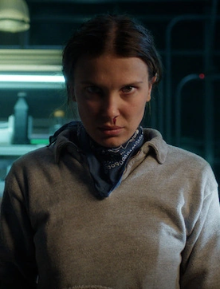
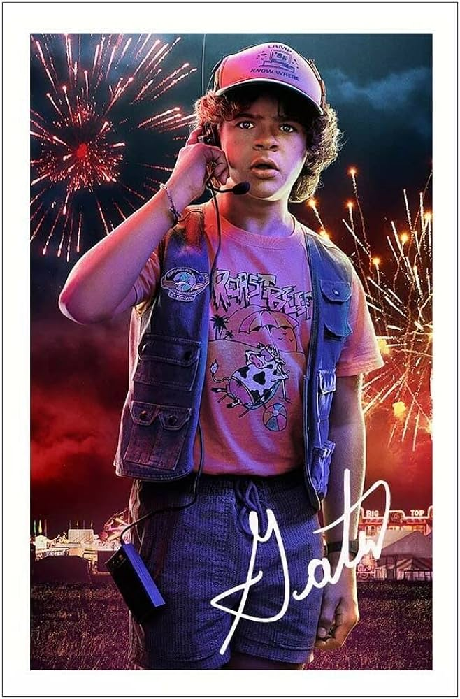
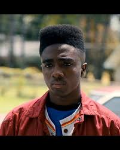
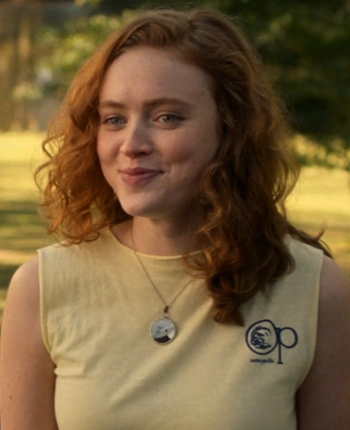
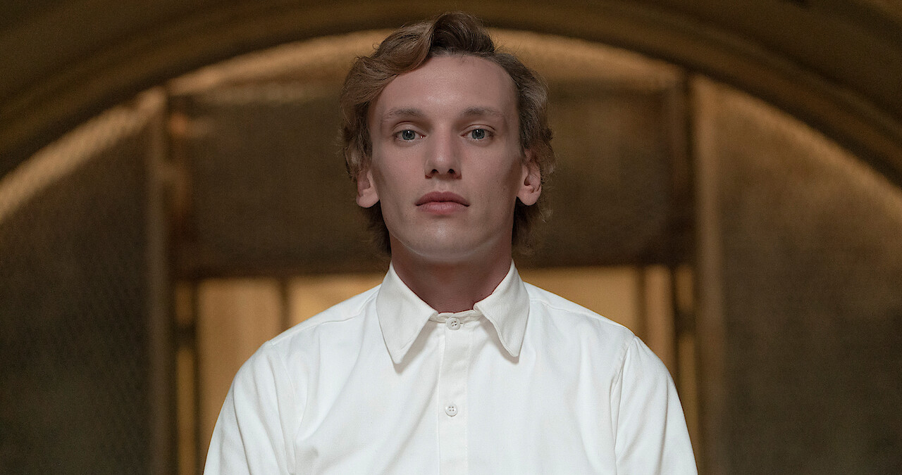

Main Characters

Eleven

Mike Wheeler

Dustin Henderson

Lucas Sinclair

Will Byers

Max Mayfield

Mystery • Friendship • The Upside Down
Stranger Things is a science-fiction horror series set in 1980s Hawkins, Indiana, where a young boy’s disappearance reveals secret experiments and a dangerous parallel world known as the Upside Down.
A group of friends face supernatural threats through courage and loyalty. Blending horror, mystery, and nostalgia, the series is known for its atmosphere, emotional depth, and iconic characters.
A visual collection of characters and creatures from Hawkins.
Mike WheelerWill Byers Jim Hopper
Jim Hopper Nancy Wheeler
Nancy Wheeler Robin Buckley
Robin Buckley Demogorgon
Demogorgon